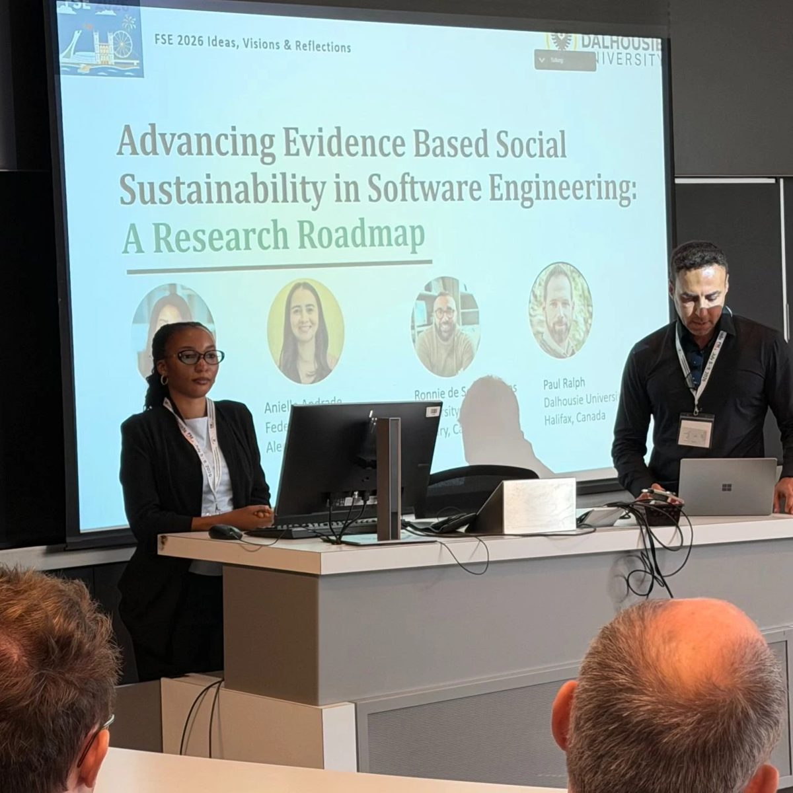
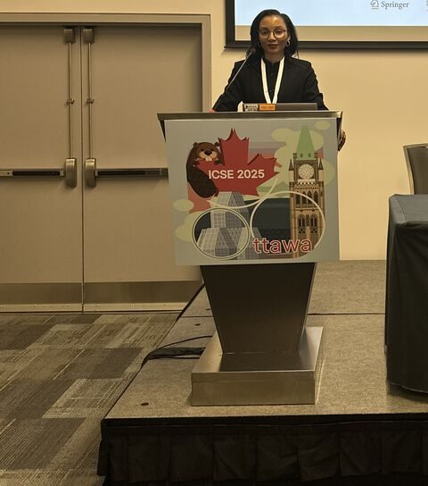

FSE 2026A research roadmap for social sustainability
I led and presented a roadmap for how software engineering can define social sustainability, measure it and test what actually helps.
AI coding agents are changing how software is built, including the systems people rely on for health care, finance and public services. I study how to make that software safe to trust. My experiments test what helps developers catch safety, reliability and fairness risks before they reach the public.

Software decides who gets a loan, who sees a job ad and whose face a camera recognizes. Those outcomes start with everyday decisions developers make. I study those decisions and test ways to improve them.
I test simple tools, like user personas and stakeholder maps, that help developers notice who a feature might hurt.
AI coding agents now write a lot of software. I study how harm slips into their code, and how well developers catch it in review.
Good answers need good experiments. I work on methods for testing interventions and AI systems, including guidelines for randomized trials in AI evaluation.

FSE 2026I led and presented a roadmap for how software engineering can define social sustainability, measure it and test what actually helps.
 Invited talk
Invited talk
As a Killam scholar, I presented my research on social sustainability in software development.
Read the Dal News story
ICSE 2025I presented evidence that personas lead developers to push harmful features down their priority list. I also joined a panel and chaired a session at AST 2025.
PhD completed at Dalhousie University, on evidence-based interventions for social sustainability.
ICML 2026 workshop paper on principles and guidelines for randomized controlled trials in AI evaluation.
NSERC Discovery Grant awarded. I helped develop the proposal and research design.
Program committee for the ICSE 2027 Software Engineering in Society track.
SPAR AI Safety Research Fellow, working with an international team on AI evaluation methods.
Digital Discovery Camp. I led a Python and chatbot workshop for young people in Halifax.
The Killam Predoctoral Award and the Nova Scotia Graduate Scholarship funded my doctoral research. I also received fellowships, scholarships and travel awards.
One of Canada's most prestigious doctoral awards. It recognizes academic and research excellence and is offered competitively across five Canadian universities.
Awarded for academic excellence at the doctoral level.
I contributed to the proposal and research design.
Selected through a competitive process for a three-month AI safety research program.
One of 16 doctoral students selected for training in policy and media writing on AI ethics, digital inequality and sustainability.
Recognizes academic excellence and contributions to women in computing.
Travel support to present at ICSE 2025 in Ottawa and ICSE 2026.
Selected for the national science communication workshop for graduate students.
Led a four-year research program on social sustainability in software engineering, from study design and ethics approval to statistical analysis and publication. Brought in industry partners so that professional engineers took part in the experiments.
Worked with an international team on how AI evaluation studies are designed and reported. Co-wrote guidelines for randomized controlled trials in AI evaluation.
Design evaluation tasks and grading criteria for AI coding agents working in real codebases. Judge their output for correctness, reliability, code quality and safety.
Designed surveys and interviews and analyzed data on the barriers Black students face in STEM education and careers in Nova Scotia.
Led software projects in fintech, health and education from requirements to deployment. Built backend services and APIs with Agile teams and mentored junior developers.
If you work on responsible AI, human-centred software or AI evaluation, I would love to hear from you. I am open to collaborations, talks and new roles.